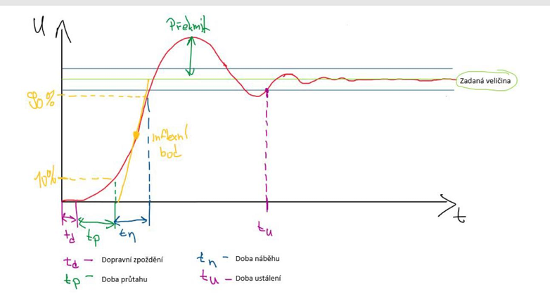

18. Statické a dynamické vlastnosti měřicího informačního systému. Metody měření vlastností.
Vypracovaná státnicová otázka · NMgr. Řídicí a informační systémy 2026 · Zdroj: Skripta MS Kapitoly 3 a 4
Znalost statických a dynamických vlastností, stejně jako jejich matematického popisu (včetně linearizace a optimalizace), tvoří absolutní základ pro návrh spolehlivých Měřicích a informačních systémů (MIS).
1. Matematický model a principiální rozdíl vlastností
Vlastnosti měřicích informačních systémů (MIS) jsou z matematického hlediska dány závislostí výstupní veličiny \( y(t) \) na vstupní veličině \( x(t) \) v čase. Obecně lze systém popsat nelineární diferenciální rovnicí vyjadřující bilanci extenzivních veličin:
Pro reálné systémy (splňující princip kauzality) vždy platí \( n \ge m \). U jednoduchých měřicích řetězců se koeficienty u derivací vstupu často zanedbávají. Za předpokladu linearizace lze systém popsat lineární diferenciální rovnicí s konstantními koeficienty:
Statické vlastnosti definují systém v ustáleném stavu (kvazistacionárním). Všechny časové derivace vstupů i výstupů jsou rovny nule (\( \frac{d}{dt} = 0 \)). Rovnice přechází na algebraický tvar \( a_0 y = b_0 x \), což popisuje statickou přenosovou charakteristiku.
Dynamické vlastnosti definují systém v přechodových dějích (mimo rovnovážné stavy). Určují, jak rychle a s jakým zpožděním či kmitáním systém reaguje na změnu na vstupu.
2. Statické vlastnosti a statická charakteristika reálného MIS
Ideální měřicí systém má dokonale lineární charakteristiku \( y = K \cdot x \), kde \( K \) je citlivost. Reálný systém však obsahuje vady, které do měření zanáší statické chyby.
Základní hodnocené odchylky od linearity:
Chyba linearity (Nelinearita): Maximální odchylka skutečné nelineární křivky od ideální (optimalizované) přímky. U aproximace se minimalizuje max. odchylka (minimalizace maximální chyby podle Čebyševova kritéria).
Počáteční necitlivost (Pásmo necitlivosti): Zóna u nuly, kde změna vstupu nevyvolá žádnou změnu výstupu (např. suché tření v mechanice).
Saturace: Při velkém vstupu dosáhne výstup své maximální nebo minimální hodnoty a dál už neroste lineárně. Typicky vzniká na konci rozsahu senzoru nebo při přebuzení zesilovače.
Offset (nulový posun): Statická charakteristika je trvale posunutá o konstantní hodnotu, i když je vstup nulový. Na rozdíl od driftu se tento posun v čase nemění.
Hystereze a chyba reverzibility: Systém vykazuje jiné výstupní hodnoty pro stejný vstup v závislosti na tom, zda měřená veličina narůstá, nebo klesá (vzniká hysterezní smyčka).
Drift: Pomalá samovolná změna (posun) výstupní hodnoty v čase při konstantním vstupu (např. teplotní drift nuly).
Potlačený rozsah: Systém začíná měřit až od určité nenulové prahové hodnoty vstupu.
Pro matematické zpracování nelineárních měřicích systémů používáme lokální linearizaci v pracovním bodě \( (x_0, u_0) \) pomocí Taylorova rozvoje prvního řádu (zanedbání vyšších derivací). Nelineární stavový model:
$$ \dot{x}(t) = f(x, u, t) $$
$$ y(t) = g(x, u, t) $$
Linearizací pro malé odchylky \( \Delta x = x - x_0 \) a \( \Delta u = u - u_0 \) získáváme klasický lineární stavový popis tvořený Jacobiho maticemi:
$$ \Delta \dot{x} = A \cdot \Delta x + B \cdot \Delta u \quad \text{kde} \quad A = \left. \frac{\partial f}{\partial x} \right|_{x_0, u_0}, \quad B = \left. \frac{\partial f}{\partial u} \right|_{x_0, u_0} $$
$$ \Delta y = C \cdot \Delta x + D \cdot \Delta u \quad \text{kde} \quad C = \left. \frac{\partial g}{\partial x} \right|_{x_0, u_0}, \quad D = \left. \frac{\partial g}{\partial u} \right|_{x_0, u_0} $$
3. Popis dynamických vlastností v čase a ve frekvenci
Dynamické chyby (\( \varepsilon_d \)) vznikají při rychlých dějích a jsou dány nedokonalostí přenosu vysoko-frekvenčních složek měřeného signálu.
A) Časová oblast (Přechodová charakteristika)
Měří se jako odezva na jednotkový skok. Dynamická chyba členu 1. řádu je analyticky definována vztahem:
$$ \varepsilon_d(t) = - k \cdot x_1 \cdot e^{-\frac{t}{T}} $$
V inženýrské praxi hodnotíme parametry z grafu přechodové charakteristiky. Doby průtahu a náběhu se u soustav vyšších řádů exaktně určují zkonstruováním tečny v inflexním bodě křivky:
Dopravní zpoždění (\( T_d \)): Čas od změny na vstupu do první reakce na výstupu (signál se šíří konečnou rychlostí). V Laplaceově obrazu se projeví členem \( e^{-p T_d} \).
Doba průtahu (\( T_p \)): Odpovídá průsečíku tečny z inflexního bodu s osou času. Vyjadřuje akumulační setrvačnost systému.
Doba náběhu (\( T_n \)): Úsek ohraničený průsečíkem tečny z inflexního bodu s osou času a přímkou ustálené hodnoty.
Doba ustálení (\( T_u \)): Doba, po které se výstup trvale udrží v pásmu tolerance (např. ±5 %) od ustálené hodnoty.
Přechodová charakteristika s vyznačením časových úseků

B) Frekvenční oblast (Bodeho a Nyquistovy diagramy)
Vznikne dosazením operátoru \( p = j\omega \) do přenosové funkce. Přenos je komplexní funkce \( F(j\omega) = f_1(\omega) + j\cdot f_2(\omega) \).
Bodeho amplitudová charakteristika: Poměr výstupní a vstupní amplitudy v závislosti na frekvenci (kreslená v decibelech, sklon -20dB/dekádu pro člen 1. řádu). Kritickým bodem je mezní frekvence (\( f_m \)), při které signál poklesne o 3 dB (výkonový pokles na polovinu).
Bodeho fázová charakteristika: Změna fáze v závislosti na frekvenci (pro člen 1. řádu od 0° po -90°).
Nyquistův diagram (Frekvenční charakteristika v komplexní rovině): Slouží hlavně k posouzení stability a rezerv zesílení a fáze u zpětnovazebních systémů. V této analýze ukáže, jak se komplexní přenos mění s frekvencí a zda se trajektorie nebezpečně přibližuje ke kritickému bodu -1 + j0. Pro jednoduchý člen 1. řádu (např. RC článek) má tvar půlkružnice v 4. kvadrantu.
4. Kritéria jakosti (Optimalizace MS)
Vlivem nedokonalých statických a dynamických vlastností vznikají chyby. Úkolem optimalizace Měřicího Informačního Systému je zmenšit tuto chybu definovanou jako rozdíl ideální \( u_{o,id}(t) \) a skutečně naměřené \( u_{o,re}(t) \) hodnoty. Základním a nejběžnějším inženýrským měřítkem pro vyjádření celkové vady je střední kvadratická chyba přenosu (MSE):
5. Metody měření statických a dynamických vlastností
Měření statických vlastností: Kalibrace krok po kroku. Do senzoru přivádíme statický (neměnný) vstupní signál od 0 % do 100 % jmenovitého rozsahu a měříme ustálený výstup. Klíčové je následně měřit zpětným chodem od 100 % do 0 %. Rozdíl mezi těmito dvěma chody v jakémkoliv bodě prokazuje hysterezi přístroje.
Měření přechodové charakteristiky v čase: Zavedení jednotkového skoku na vstup (např. náhlé připojení napětí, bleskové přemístění teploměru z bodu mrazu do bodu varu). Osciloskopem (nebo A/D převodníkem při splnění Shannonova teorému \( f_{vz} > 2 \cdot f_{max} \)) záznam výstupu a analytické určení \( T_d \), \( T_p \), \( T_n \) tečnou v inflexním bodě.
Měření frekvenční charakteristiky: Zavedení harmonického signálu proměnné frekvence (funkční generátor s režimem sweep) na vstup. Měříme útlum a zpoždění výstupu, z čehož na spektrálním analyzátoru nebo vektorovém analyzátoru zkonstruujeme Bodeho či Nyquistovy diagramy.
Co určitě umět říct u státnic
Rozdíl statika a dynamika: Statické vlastnosti popisují měřicí systém v ustáleném stavu (časové derivace jsou nula, uplatňuje se statická převodní charakteristika). Dynamické vlastnosti popisují chování při změnách v čase (náběhy, překmity) a jsou řešeny diferenciálními rovnicemi.
Matematický model a Linearizace: Reálné systémy jsou nelineární (mají hysterzi, pásma necitlivosti). Lze je aproximovat pro malý rozkmit v pracovním bodě pomocí Taylorova rozvoje (vzniknou Jacobiho matice \( A, B, C, D \) pro stavový popis).
Odchylky reálného měřidla: Patří sem chyba linearity, počáteční necitlivost, offset, hystereze a drift (samovolná změna v čase bez změny měřené veličiny). Hysterezi prokážu měřením hodnot plynule nahoru a ihned plynule dolů.
Přechodová charakteristika: Z odezvy na skok určujeme dopravní zpoždění (\( T_d \)), dobu průtahu (\( T_p \)) a dobu náběhu (\( T_n \)). Exaktní definice \( T_p \) a \( T_n \) se provádí proložením tečny v inflexním bodě!
Frekvenční charakteristika: Graficky se zobrazuje Nyquistovým diagramem (v komplexní rovině, kde ideální přenos 1. řádu je půlkružnice) nebo Bodeho charakteristikou (důležitá je mezní frekvence \( f_m \) představující pokles o 3 dB). Z nich se čtou i amplitudová a fázová bezpečnost, tedy rezervy stability regulace.
Optimalizace přenosu: Chyby reálného MIS minimalizujeme vyhodnocením střední kvadratické chyby integrálem z kvadrátu odchylky reálného a ideálního signálu.